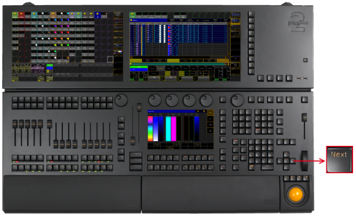

Next Key
The key
Next
is located in the command area on the right of the key
Set
.

Location k
ey
Next
If a pop-up dialog is open, for example the pop-up Choose store method, you can set the focus on the following options by pressing the key
Next
.
Pressing
Next
executes the
Next keyword
. The fixture with the lowest fixture ID is selected.
[time] : Executing : Next
Pressing and holding
+
Next
executes the
NextRow keyword
. For more information see
MAtricks
.
[time] : Executing : NextRow
Pressing
Next
+
Prev
executes the
All keyword
.
[time] : Executing : All
 + Next executes the NextRow keyword. For more information see MAtricks. + Next executes the NextRow keyword. For more information see MAtricks.
+ Next executes the NextRow keyword. For more information see MAtricks. + Next executes the NextRow keyword. For more information see MAtricks.